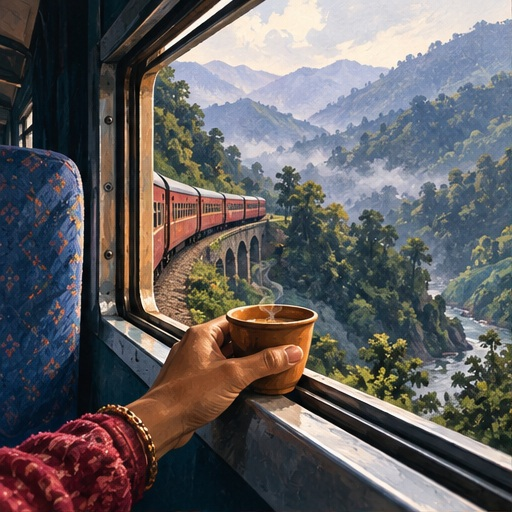
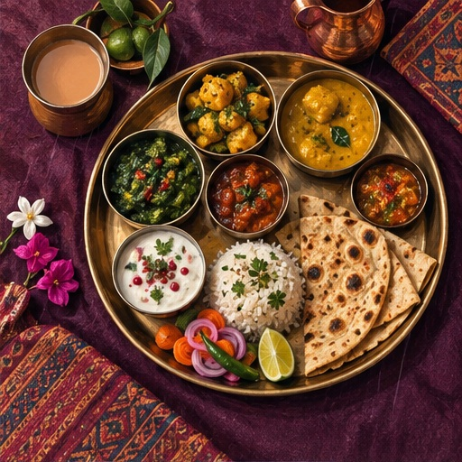
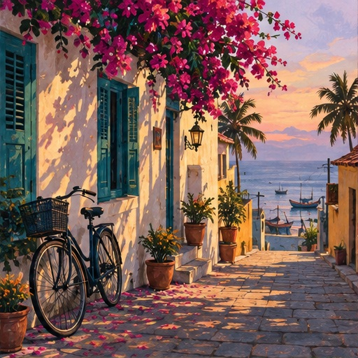
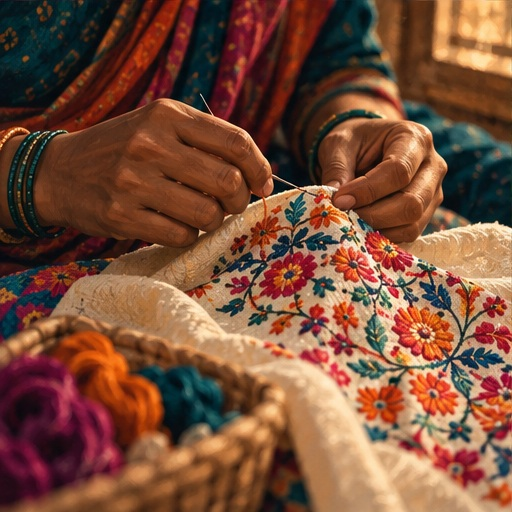

JOURNALDiscover ZikPe ↗
JOURNALDiscover ZikPe ↗
India, beyond
the obvious.
Good food. New places. Local know-how for foreigners, NRIs and Indians. Your next India story starts here.
Featured stories

Eating in Kochi: Kerala flavours and a slower table
Treat food as part of the journey, with enough time to ask, taste and enjoy.
Read story ↗
Kochi for first-time international visitors
Begin with the waterfront, then follow the city's layers of history at your own pace.
Read story ↗Latest stories
28 stories · All stories

Jaipur curios: buy the craft, not an antique story
An old-city browse for metalwork, paintings and decorative objects, with a clear line between a new souvenir and a regulated antiquity.
Read story ↗
Mumbai indie and vintage: two different shopping days
Independent design in Kala Ghoda and old-object browsing at Chor Bazaar ask different questions of a shopper.
Read story ↗
Delhi evening markets: plan for dusk, not midnight
Janpath and Dilli Haat INA offer two different visits. Verify actual closing arrangements instead of trusting a late-night label.
Read story ↗
June festival travel: five traditions and a date check
Five cultural and religious travel leads, with clear limits on which dates can be used to plan a future trip.
Read story ↗
A sattvic meal in India: ask beyond vegetarian
Two restaurant leads and better ingredient questions, without health promises or assumptions about every kitchen.
Read story ↗
A slower Corbett stay: checking Shervani Pebbles & Pines
Operator-listed facilities, room details worth checking twice, and the difference between a hotel stay and a confirmed safari.
Read story ↗What is ZikPe?
This journal is for foreigners, NRIs and Indians exploring India. ZikPe brings travel and payments into the journey, including an advertised visitor wallet and merchant UPI payments for eligible users.
Explore places, food and practical details around your trip. Wallet eligibility, accepted documents, fees and supported services depend on the current app and provider terms. Being part of this journal's audience does not by itself confirm access to a payment service.
Read about UPI for visitors ↗